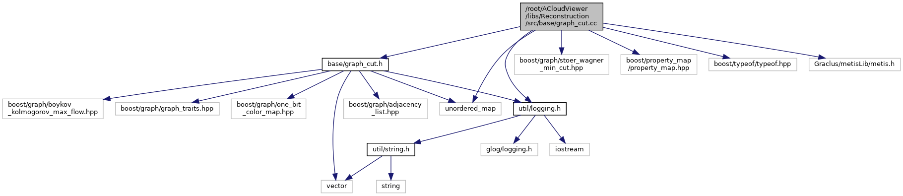

|
ACloudViewer
3.9.4
A Modern Library for 3D Data Processing
|
|
ACloudViewer
3.9.4
A Modern Library for 3D Data Processing
|
#include "base/graph_cut.h"#include <unordered_map>#include <boost/graph/stoer_wagner_min_cut.hpp>#include <boost/property_map/property_map.hpp>#include <boost/typeof/typeof.hpp>#include "Graclus/metisLib/metis.h"#include "util/logging.h"
Go to the source code of this file.
Namespaces | |
| colmap | |
Functions | |
| void | colmap::ComputeMinGraphCutStoerWagner (const std::vector< std::pair< int, int >> &edges, const std::vector< int > &weights, int *cut_weight, std::vector< char > *cut_labels) |
| std::unordered_map< int, int > | colmap::ComputeNormalizedMinGraphCut (const std::vector< std::pair< int, int >> &edges, const std::vector< int > &weights, const int num_parts) |
| GraphType data |
Definition at line 138 of file graph_cut.cc.
Referenced by cloudViewer::ml::impl::Adaptor< T >::Adaptor(), QCPDataContainer< DataType >::add(), Test_CreationClass::add3dFace(), Test_CreationClass::addArc(), vtkPVXMLElement::AddCharacterData(), Test_CreationClass::addCircle(), Test_CreationClass::addLayer(), Test_CreationClass::addLine(), pcl::visualization::ImageViewer::addMonoImage(), PclUtils::PCLVis::addOrientedCube(), Test_CreationClass::addPoint(), Test_CreationClass::addPolyline(), PclUtils::PCLVis::addPolyline(), pcl::visualization::ImageViewer::addRGBImage(), cloudViewer::t::geometry::RaycastingScene::AddTriangles(), Test_CreationClass::addVertex(), colmap::Bitmap::Allocate(), AnglesCustomPlot::AnglesCustomPlot(), colmap::Bitmap::Bitmap(), BOOST_AUTO_TEST_CASE(), knncpp::BruteForce< Scalar, Distance >::BruteForce(), knncpp::MultiIndexHashing< Scalar >::build(), BuildKDTree(), QUIWidget::byteArrayToAsciiStr(), QUIWidget::byteArrayToHexStr(), QUIWidget::byteToInt(), QUIWidget::byteToUShort(), QuaAdler32::calculate(), QuaCrc32::calculate(), CRC::Calculate(), cloudViewer::visualization::webrtc_server::WebRTCWindowSystem::CallHttpAPI(), cloudViewer::t::geometry::RaycastingScene::CastRays(), ccAlignDlg::ccAlignDlg(), ccRegistrationDlg::ccRegistrationDlg(), ccRenderToFileDlg::ccRenderToFileDlg(), vtkPVXMLParser::CharacterDataHandler(), cvIsoSurfaceFilter::clearAllActor(), QCPColorGradient::colorize(), cloudViewer::visualization::rendering::CombineTextures(), cloudViewer::t::geometry::RaycastingScene::ComputeClosestPoints(), cloudViewer::t::geometry::RaycastingScene::ComputeDistance(), ComputeFeatures(), AnglesCustomPlot::computeHistogram(), ccPointCloud::computeNormalsWithOctree(), cloudViewer::t::geometry::RaycastingScene::ComputeSignedDistance(), pcl::visualization::ImageViewer::convertIntensityCloud8uToUChar(), pcl::visualization::ImageViewer::convertIntensityCloudToUChar(), IoUtils::convertMatrix(), pcl::visualization::ImageViewer::convertRGBCloudToUChar(), cvSelectionPipeline::convertToCvSelectionData(), cloudViewer::t::geometry::RaycastingScene::CountIntersections(), VtkUtils::createActorFromData(), cvGenericFilter::createActorFromData(), VtkUtils::VtkWidget::createActorFromVTKDataSet(), PclTools::CreateActorFromVTKDataSet(), PclTools::CreateCube(), ecvOrientedBBox::CreateFromPoints(), cloudViewer::io::rpc::DataBufferToMetaGeometry(), define_ccCameraSensor(), define_ccGLMatrixClass(), define_ccObject(), cloudViewer::t::io::DepthNoiseSimulator::DepthNoiseSimulator(), colmap::DownsampleImage(), ccCompass::estimateStructureNormals(), vtkBoundedVolumeSource::ExecuteDataWithInformation(), qFacets::exportFacets(), qFacets::exportFacetsInfo(), cvSelectionPipeline::extractDataFromSelection(), CVTools::FileMappingReader(), CVTools::FileMappingWriter(), CorePointDescSet::fromByteArray(), colmap::mvs::CudaArrayLayeredTexture< T >::FromHostArray(), cvSelectionFilter::getAttributeNames(), vtkPVXMLElement::GetCharacterDataAsVector(), QUIWidget::getCheckCode(), cvSelectionBase::getDataFromActor(), PclTools::GetDefaultScalarInterpolationForDataSet(), cvGenericFilter::getDefaultScalarInterpolationForDataSet(), VtkUtils::getDefaultScalarInterpolationForDataSet(), GetFacetMetaData(), getImageList(), ImageFileFilter::GetLoadFilename(), QUIWidget::getOrCode(), cvSelectionPipeline::getPixelSelectionInfo(), cvViewSelectionManager::getPolyData(), cvSelectionBase::getPolyDataForSelection(), DistanceMapGenerationTool::GetPoylineMetaData(), cvSelectionPipeline::getPrimaryDataFromSelection(), ImageFileFilter::GetSaveFilename(), vtkPVXMLElement::GetVectorAttribute(), QUIWidget::getXorEncryptDecrypt(), ccPlanarEntityInterface::glDrawNormal(), cloudViewer::ml::contrib::grid_subsampling(), cloudViewer::core::HashClearInt(), cloudViewer::core::HashClearInt3(), cloudViewer::core::HashEraseInt(), cloudViewer::core::HashEraseInt3(), cloudViewer::core::HashFindInt(), cloudViewer::core::HashFindInt3(), cloudViewer::core::HashInsertInt(), cloudViewer::core::HashInsertInt3(), cloudViewer::core::HashReserveInt(), cloudViewer::core::HashReserveInt3(), ccRegistrationTools::ICP(), cvSelectionAnnotationManager::importFromFile(), cloudViewer::geometry::KDTreeFlann::KDTreeFlann(), knncpp::KDTreeMinkowski< _Scalar, _Dimension, _Distance >::KDTreeMinkowski(), cloudViewer::t::geometry::RaycastingScene::ListIntersections(), AsciiFilter::loadAsciiData(), FBXFilter::loadFile(), RDBFilter::loadFile(), LasWaveformLoader::loadWaveform(), main(), colmap::SiftFeatureMatcher::Match(), knncpp::MultiIndexHashing< Scalar >::MultiIndexHashing(), CGAL_Normal_Estimator::My_Triplet< T >::My_Triplet(), VTKExtensions::vtkCustomInteractorStyle::OnKeyDown(), cvSelectionToolController::onModifierChanged(), CGAL_Normal_Estimator::My_Triplet< T >::operator()(), LasExtraScalarField::ParseExtraScalarFields(), ParseWavepacketDescriptorVlr(), colmap::JobQueue< T >::Pop(), LDATrainer::predict(), CommandICP::process(), colmap::JobQueue< T >::Push(), CVTools::QMappingWriter(), knncpp::MultiIndexHashing< Scalar >::query(), cloudViewer::t::io::ReadASCIIPCDColorsFromField(), colmap::ReadBinaryBlob(), colmap::ReadBinaryLittleEndian(), cloudViewer::t::io::ReadBinaryPCDColorsFromField(), QuaGzipFile::readData(), QuaZIODevice::readData(), QuaZipFile::readData(), cloudViewer::utility::filesystem::CFile::ReadData(), vtkMultiProcessControllerHelper::ReduceToAll(), colmap::RefineAbsolutePose(), cvSelectionPipeline::refinePolygonSelection(), cloudViewer::ICPRegistrationTools::Register(), colmap::ResampleImageBilinear(), ccPointCloudLOD::resetVisibility(), colmap::ReverseBytes(), colmap::SiftCPUFeatureMatcher::Run(), colmap::SiftGPUFeatureMatcher::Run(), colmap::TwoViewGeometryVerifier::Run(), LASFWFFilter::saveToFile(), cloudViewer::io::rpc::BufferConnection::Send(), cloudViewer::io::rpc::Connection::Send(), QCPDataContainer< DataType >::set(), knncpp::KDTreeMinkowski< _Scalar, _Dimension, _Distance >::setData(), knncpp::BruteForce< Scalar, Distance >::setData(), knncpp::MultiIndexHashing< Scalar >::setData(), cloudViewer::t::pipelines::slam::Frame::SetData(), cloudViewer::t::pipelines::slam::Frame::SetDataFromImage(), cloudViewer::geometry::KDTreeFlann::SetMatrixData(), ccObject::setMetaData(), cvGenericFilter::setResultData(), pcl::visualization::ImageViewer::showCorrespondences(), ccPointCloudLOD::shrink_to_fit(), sMetaDataValid(), colmap::SmoothImage(), PyCC::SpanAsNumpyArray(), cloudViewer::t::geometry::RaycastingScene::TestOcclusions(), cloudViewer::SquareMatrixTpl< Scalar >::toArray(), CorePointDescSet::toByteArray(), cloudViewer::visualization::rendering::Material::ToMaterialRecord(), cloudViewer::t::io::UnpackASCIIPCDElement< double >(), cloudViewer::t::io::UnpackASCIIPCDElement< float >(), cloudViewer::t::io::UnpackASCIIPCDElement< std::int16_t >(), cloudViewer::t::io::UnpackASCIIPCDElement< std::int32_t >(), cloudViewer::t::io::UnpackASCIIPCDElement< std::int64_t >(), cloudViewer::t::io::UnpackASCIIPCDElement< std::int8_t >(), cloudViewer::t::io::UnpackASCIIPCDElement< std::uint16_t >(), cloudViewer::t::io::UnpackASCIIPCDElement< std::uint32_t >(), cloudViewer::t::io::UnpackASCIIPCDElement< std::uint64_t >(), cloudViewer::t::io::UnpackASCIIPCDElement< std::uint8_t >(), ccCameraSensor::updateData(), ecvDisplayTools::UpdateDisplayParameters(), GrainsAsEllipsoids::updateMeshAndLineSet(), colmap::LinePainter::Upload(), colmap::PointPainter::Upload(), colmap::TrianglePainter::Upload(), vtkPVXMLVectorAttributeParse(), DL_Dxf::write3dFace(), DL_Dxf::writeArc(), DL_Dxf::writeAttribute(), colmap::WriteBinaryBlob(), colmap::WriteBinaryLittleEndian(), DL_Dxf::writeBlock(), DL_Dxf::writeCircle(), DL_Dxf::writeControlPoint(), QuaGzipFile::writeData(), QuaZIODevice::writeData(), QuaZipFile::writeData(), DL_Dxf::writeDimAligned(), DL_Dxf::writeDimAngular(), DL_Dxf::writeDimAngular3P(), DL_Dxf::writeDimDiametric(), DL_Dxf::writeDimLinear(), DL_Dxf::writeDimOrdinate(), DL_Dxf::writeDimRadial(), DL_Dxf::writeDimStyleOverrides(), cloudViewer::t::io::WriteElementDataToFileASCII< double >(), cloudViewer::t::io::WriteElementDataToFileASCII< float >(), cloudViewer::t::io::WriteElementDataToFileASCII< std::int16_t >(), cloudViewer::t::io::WriteElementDataToFileASCII< std::int32_t >(), cloudViewer::t::io::WriteElementDataToFileASCII< std::int64_t >(), cloudViewer::t::io::WriteElementDataToFileASCII< std::int8_t >(), cloudViewer::t::io::WriteElementDataToFileASCII< std::uint16_t >(), cloudViewer::t::io::WriteElementDataToFileASCII< std::uint32_t >(), cloudViewer::t::io::WriteElementDataToFileASCII< std::uint64_t >(), cloudViewer::t::io::WriteElementDataToFileASCII< std::uint8_t >(), DL_Dxf::writeEllipse(), DL_Dxf::writeFitPoint(), DL_Dxf::writeHatch1(), DL_Dxf::writeHatch2(), DL_Dxf::writeHatchEdge(), DL_Dxf::writeHatchLoop1(), DL_Dxf::writeImage(), DL_Dxf::writeImageDef(), DL_Dxf::writeInsert(), DL_Dxf::writeKnot(), DL_Dxf::writeLayer(), DL_Dxf::writeLeader(), DL_Dxf::writeLeaderVertex(), DL_Dxf::writeLine(), DL_Dxf::writeLinetype(), DL_Dxf::writeMText(), cloudViewer::t::io::WriteNpzOneTensor(), DL_Dxf::writePoint(), DL_Dxf::writePolyline(), DL_Dxf::writeRay(), DL_Dxf::writeSolid(), DL_Dxf::writeSpline(), DL_Dxf::writeText(), DL_Dxf::writeTrace(), DL_Dxf::writeVertex(), DL_Dxf::writeXLine(), and cloudViewer::OctreeAndMeshIntersection::~OctreeAndMeshIntersection().